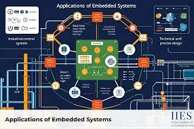

The main objectives of the fourth week of the embedded systems training program were to:
During the fourth week of the embedded systems training program, I delved into advanced concepts in embedded systems design and development. I learned about various communication protocols commonly used in embedded systems, such as I2C, SPI, UART, and CAN. I gained an understanding of how these protocols facilitate communication between different components in an embedded system and how to implement them in my projects.
I also explored power management techniques for embedded systems, which are crucial for optimizing energy consumption and extending battery life in portable devices. I learned about different power modes, sleep states, and strategies for reducing power consumption in embedded applications.
In addition to theoretical knowledge, I had the opportunity to gain hands-on experience with advanced microcontroller features and peripherals. I worked on projects that involved interfacing with sensors, actuators, and communication modules, allowing me to apply my knowledge in a practical context.
Overall, the fourth week provided valuable insights into advanced topics in embedded systems and equipped me with the skills needed to develop more complex applications. I am excited to continue exploring new concepts and technologies in the coming weeks.
In the next week, I look forward to learning about real-time operating systems (RTOS) and how they can be used to manage tasks and resources in embedded systems, as well as exploring advanced debugging and testing techniques for embedded applications.
Key learning outcomes from Week 4:
Overall, Week 4 was an enriching week of learning and hands-on experience in advanced embedded systems concepts and applications, and I am eager to continue learning and exploring more advanced topics in the weeks ahead.
Next week, I will focus on learning about real-time operating systems (RTOS) and how they can be used to manage tasks and resources in embedded systems, as well as exploring advanced debugging and testing techniques for embedded applications.
